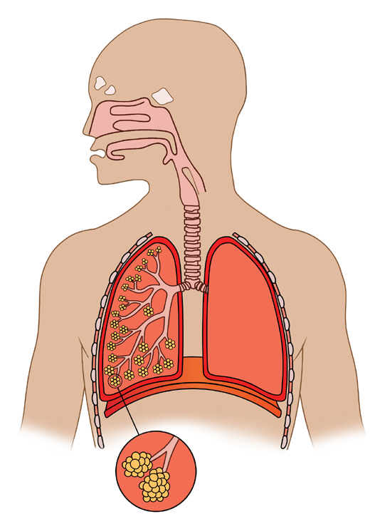
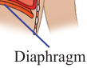

129
Student’s Book - Form Two

Biology for Secondary Schools
Gas exchange is process that enables mammals to obtain oxygen gas in their body for respiration. Gas exchange is possible through the respiratory system.
The components of the respiratory system of mammals include the nostril, nasal cavity, pharynx, trachea, bronchi, lungs, bronchioles, alveoli, intercostal muscles, diaphragm and ribs, as shown in Figure 6.1.

Nose
Nostril
Nasal cavity
Larynx
Bronchus
Bronchiole
Alveoli
Pharynx
Epiglottis
Trachea
Rib
Lung
Diaphragm

Figure 6.1: Human respiratory system
Each component of the mammalian respiratory system performs a particular function and has various adaptive features that enable its functions, as shown in
Table 6.2.
Table 6.2: Adaptations and functions of parts of the mammalian respiratory system
Part
Adaptive features
Functions
Nose and nasal cavity
Mucus lining and hairs (cilia)
Traps dust and micro-organisms
Glottis
Presence of epiglottis
Closes the trachea during swallowing to prevent food from entering the respiratory system
Trachea, bronchus and bronchioles
Blood vessels near the surface
Warm the air
Have rings of cartilage tissue along their length
Prevent collapse of the respiratory tract
08/04/2026 10:18:34